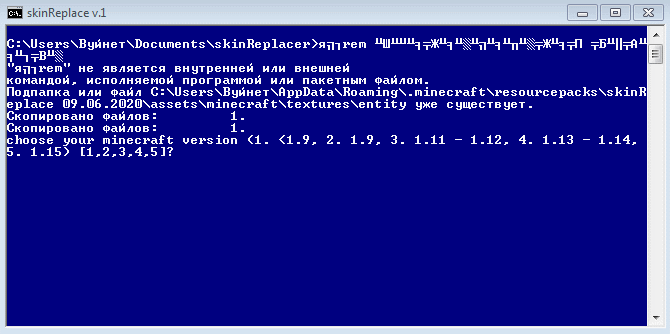

Что это?
skinReplacer - утилита, позволяющая без лишней возни с
файлами установить свой собственный скин на пиратский
клиент майнкрафта.

Инструкция.
- Переместить файл со скином в папку skins (папка там же, где и скрипт).
- Запустите skinReplace.bat
- Выберите вашу версию (если вы играете на версии ниже 1.9, то нажмите 1)
- Откройте игру.
- Настройки -> Пакеты ресурсов
- Поставьте пак “skinReplace %дата%” на первое место.
- Готово :)
Проблемы.
- Комфортно можно будет играть только в одиночке, иначе,
в сетевой игре вы встретите ОЧЕНЬ много людей с вашим
скином (думаю, понятно почему).
- Если к вашему нику привязан аккаунт, то будет отображатся
только скин, который привязан к нему.